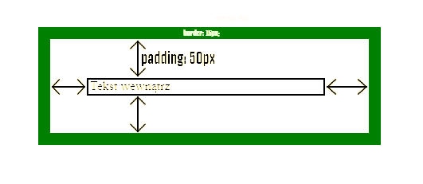

Box model CSS
Czym jest box model ?
Wszystkie elementy HTML można traktować jak pola. W CSS termin „model pudełkowy” jest używany, gdy mówi się o projekcie i układzie.
Model pudełkowy CSS jest zasadniczo pudełkiem, które otacza każdy element HTML. Składa się z: marginesów, ramek, wypełnienia i rzeczywistej zawartości. Poniższy obraz ilustruje model pudełka:

Objaśnienia elementów:
Model pudełkowy pozwala nam dodać obramowanie wokół elementów i zdefiniować przestrzeń między elementami.
Wszystkie elementy HTML można traktować jak pola. W CSS termin „model pudełkowy” jest używany, gdy mówi się o projekcie i układzie.
Model pudełkowy CSS jest zasadniczo pudełkiem, które otacza każdy element HTML. Składa się z: marginesów, ramek, wypełnienia i rzeczywistej zawartości. Poniższy obraz ilustruje model pudełka:
Objaśnienia elementów:
- Content - Zawartość pola, w którym pojawia się tekst i obrazy;
- Padding - Czyści obszar wokół zawartości. Wypełnienie jest przezroczyste;
- Border - Obramowanie wokół wypełnienia i zawartości;
- Margin - Czyści obszar poza granicą. Margines jest przezroczysty.
Przykład
div
{
width: 300px;
border: 15px solid green;
padding: 50px;
margin: 15px;
}
div
{
width: 300px;
border: 15px solid green;
padding: 50px;
margin: 15px;
}
Tekst wewnątrz

Czym jest div?
Do budowy sekcji możemy użyć elementu blokowego
Do budowy sekcji możemy użyć elementu blokowego
(ang. division – oddział, wydział, sekcja). Element ten nazywany jest również box’em (pudełkiem), albo kontenerem (ang. container, contain – zawierać w sobie), z tego względu, że zawiera on w sobie inne elementy.
Poniżej znajdziesz materiał, który pomoże ci zrozumieć strukturę strony www opartej na divach, oraz poznasz jej wady i zalety.
Poniżej znajdziesz materiał, który pomoże ci zrozumieć strukturę strony www opartej na divach, oraz poznasz jej wady i zalety.